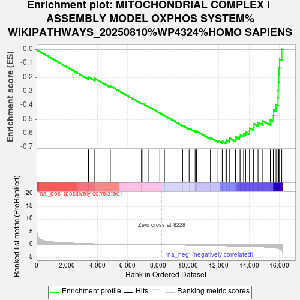
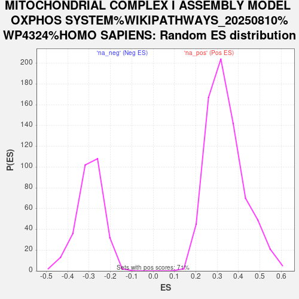

| Dataset | PAL_vs_CTL_ranked |
| Phenotype | NoPhenotypeAvailable |
| Upregulated in class | na_neg |
| GeneSet | MITOCHONDRIAL COMPLEX I ASSEMBLY MODEL OXPHOS SYSTEM%WIKIPATHWAYS_20250810%WP4324%HOMO SAPIENS |
| Enrichment Score (ES) | -0.6684217 |
| Normalized Enrichment Score (NES) | -2.2388198 |
| Nominal p-value | 0.0 |
| FDR q-value | 4.5104368E-4 |
| FWER p-Value | 0.002 |

| SYMBOL | RANK IN GENE LIST | RANK METRIC SCORE | RUNNING ES | CORE ENRICHMENT | |
|---|---|---|---|---|---|
| 1 | NDUFAF4 | 3420 | 0.435 | -0.1944 | No |
| 2 | NDUFA5 | 3833 | 0.374 | -0.2053 | No |
| 3 | NDUFC2 | 4859 | 0.252 | -0.2588 | No |
| 4 | TMEM70 | 6909 | 0.083 | -0.3822 | No |
| 5 | NDUFAF1 | 6952 | 0.080 | -0.3817 | No |
| 6 | NDUFA12 | 7351 | 0.051 | -0.4043 | No |
| 7 | NDUFS1 | 8117 | 0.005 | -0.4513 | No |
| 8 | NDUFV2 | 8424 | -0.011 | -0.4698 | No |
| 9 | NDUFAF2 | 9623 | -0.087 | -0.5404 | No |
| 10 | TMEM126B | 10051 | -0.117 | -0.5623 | No |
| 11 | NDUFA6 | 10446 | -0.146 | -0.5810 | No |
| 12 | NDUFB8 | 10534 | -0.153 | -0.5804 | No |
| 13 | NDUFS4 | 11453 | -0.227 | -0.6283 | No |
| 14 | NDUFV3 | 11952 | -0.274 | -0.6484 | No |
| 15 | TMEM186 | 12232 | -0.302 | -0.6539 | No |
| 16 | NDUFB6 | 12468 | -0.333 | -0.6555 | Yes |
| 17 | DMAC2 | 12521 | -0.340 | -0.6455 | Yes |
| 18 | NDUFB2 | 12692 | -0.360 | -0.6420 | Yes |
| 19 | TIMMDC1 | 12737 | -0.366 | -0.6305 | Yes |
| 20 | COA1 | 13104 | -0.411 | -0.6371 | Yes |
| 21 | NDUFS5 | 13138 | -0.417 | -0.6230 | Yes |
| 22 | NDUFA13 | 13361 | -0.450 | -0.6192 | Yes |
| 23 | NDUFAF6 | 13437 | -0.462 | -0.6059 | Yes |
| 24 | NDUFB5 | 13641 | -0.493 | -0.5993 | Yes |
| 25 | NDUFB3 | 13774 | -0.518 | -0.5873 | Yes |
| 26 | ECSIT | 14030 | -0.563 | -0.5812 | Yes |
| 27 | NDUFA10 | 14043 | -0.566 | -0.5600 | Yes |
| 28 | NDUFA3 | 14283 | -0.618 | -0.5507 | Yes |
| 29 | NDUFS6 | 14319 | -0.625 | -0.5286 | Yes |
| 30 | NDUFB4 | 14592 | -0.687 | -0.5187 | Yes |
| 31 | NDUFB1 | 14867 | -0.763 | -0.5060 | Yes |
| 32 | DMAC1 | 15399 | -0.971 | -0.5011 | Yes |
| 33 | NDUFAB1 | 15596 | -1.098 | -0.4706 | Yes |
| 34 | NDUFB7 | 15624 | -1.117 | -0.4289 | Yes |
| 35 | NDUFB9 | 15778 | -1.240 | -0.3901 | Yes |
| 36 | NDUFB11 | 15907 | -1.385 | -0.3442 | Yes |
| 37 | NDUFC1 | 15915 | -1.399 | -0.2903 | Yes |
| 38 | NUBPL | 15927 | -1.418 | -0.2359 | Yes |
| 39 | NDUFA2 | 15950 | -1.447 | -0.1811 | Yes |
| 40 | NDUFS3 | 15974 | -1.480 | -0.1250 | Yes |
| 41 | ACAD9 | 16014 | -1.550 | -0.0672 | Yes |
| 42 | NDUFB10 | 16155 | -2.071 | 0.0046 | Yes |
